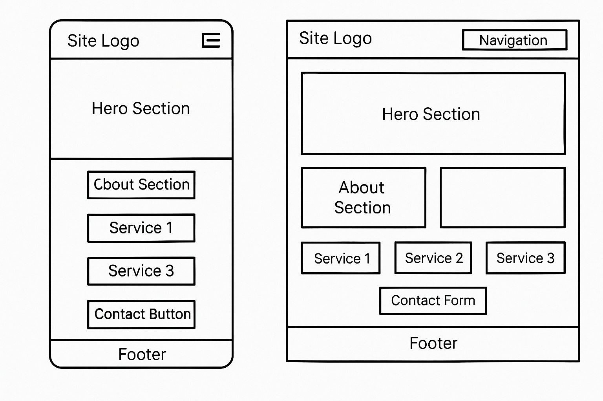

WDD131 Portfolio Hub – This site serves as a portfolio to showcase my web development projects and assignments completed throughout the WDD131 course. The name is chosen to reflect its purpose as a hub for my work, highlighting my growth and achievements in the course.
The purpose of this site is to showcase the various projects and assignments I completed during my WDD131 Web Development course. The site provides information about each project, including detailed descriptions, technologies used, and my development process. Additionally, it serves as a professional portfolio for future employers and collaborators.
The color scheme for the site includes:
This color schema will ensure the site looks vibrant while maintaining clarity and usability.
For typography, the following fonts will be used:
These fonts provide a clean, modern look that aligns with the overall design and functionality of the site.
Below are the homepage wireframes for mobile and desktop views:
